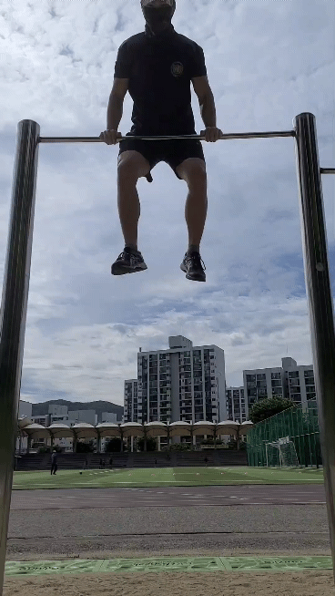
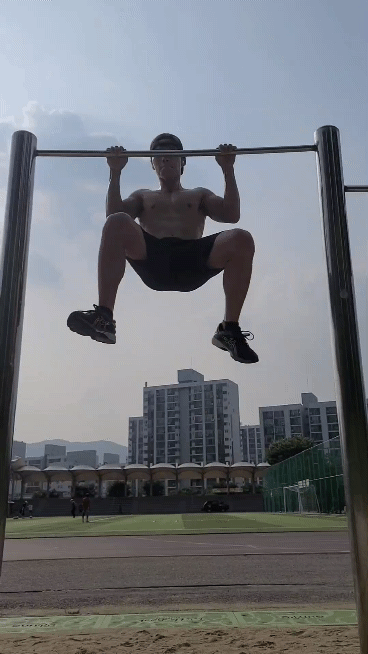
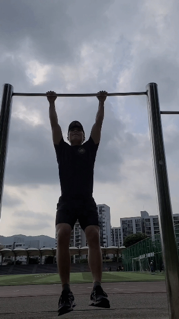

Introduction
Thank you for visiting my website! This is where I introduce myself.
Contact me:
- Email: ihazun01@gmail.com
- github
Coding Languages:
- Python
Worldly Languages:
- Korean
- Arabic
- Current side job: 크몽 아랍어 번역 프리랜서
- English
나의 이야기
9살이 되던 해, 중동으로 떠나 시리아와 레바논에서 자랐으며, 현지학교에서 고등학교까지 졸업한 후, 현재는 미국에서 데이터 과학을 전공으로 공부하는 이하준입니다. 요즘은 머신러닝에 흥미를 두고 있습니다.하준이는 이런걸 잘해요!
- 언어를 좋아하고 빠르게 습득해요.
- 친구들의 말을 잘 들어줘요. 대화가 오래가요.
- 몸은 힘들지만 정신적으로 편한게, 정신적으로 힘들지만 몸이 편한거보다 더 좋습니다. (좋아하는 사람들과 밤새 하는 행군이, 싫어하는 사람들과 몇 시간씩 같이 일하는 것보다 편해요!)
- 한가지에 꽂히면 꾸준히 해요.
- 버티는 걸 잘합니다. 힘들어도 끝을 보는것을 좋아해요.
- 떠날 때 미련이 남지 않게, 현재 소속되어 있는 곳에서 최선을 다해요.
값진 경험들
-
입대 전:
- 레바논 동명부대 민간 의료지원 아랍어 통역(자원봉사) 기간: 중,고등학교 여름방학 3개월 총 3번
- 서울대병원, 분당서울대병원 의료 통역 아랍어 프리랜서 기간: 2018-07월 ~ 2018-08
느낀점: 간호사들은 예민하다. 수많은 환자들을 상대해야 한다. 역시 사람을 상대하는 것이 가장 힘든 것 같다.
-
입대 중:
-
육군 육직 특수전 사령부 제 13 특수임무여단 OO대대 전투병과 병장 전역
느낀점: 죽다 살아 나온 곳. 내 인생에서 가장 고난이 많았던 곳. 운동을 한없이 많이 했던 곳. 매일 같이 한계를 치면서 삶에 대해 많은 것을 배운 곳. 멋있는 것은 대가를 치른다는 것을 배운 곳. 나를 더 알아간 곳.

강하 기다리는 하준이

전역하는 하준이
-
UNIFIL 예하 레바논 평화 지원단 동명 22진 아랍어 통역병
느낀점: 몸보다 정신이 많이 힘들었던 곳. 타 부서 간부들이 나에게 인사를 할때, 그들이 무엇을 바라고 그런다는것을 느꼈을 때, 나의 순수한 동심은 파괴되었다. 삶에 대해서 많은 것을 배운 곳. 일을 어떻게 해야 하는지, 사람들을 어떻게 대해야 하는지 배운 곳.
-
주요 업적들:
- 레바논 현지 태권도 협회와 동명부대 간 MOU 체결 성사
-
레바논 남부지역 아이들의 세계태권도대회(Beirut Open 2019) 참여에 통역지원

무전 때리는 하준이

번역하는 하준이
-
동명부대 단장님의 현지 장군들과의 친선 활동시, 단독으로 통역 제공
느낀점: 개인적으로 남을 기분좋게 하는 대화법과 눈치, 그리고 상황 판단력을 조금이나마 배우게 된 경험.
- 동명부대와 레바논 현지 부대의 군사훈련 통역지원
-
주요 업적들:
-
육군 육직 특수전 사령부 제 13 특수임무여단 OO대대 전투병과 병장 전역